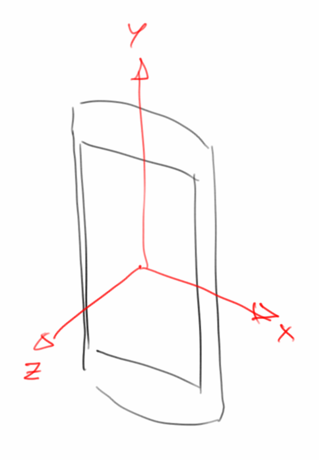
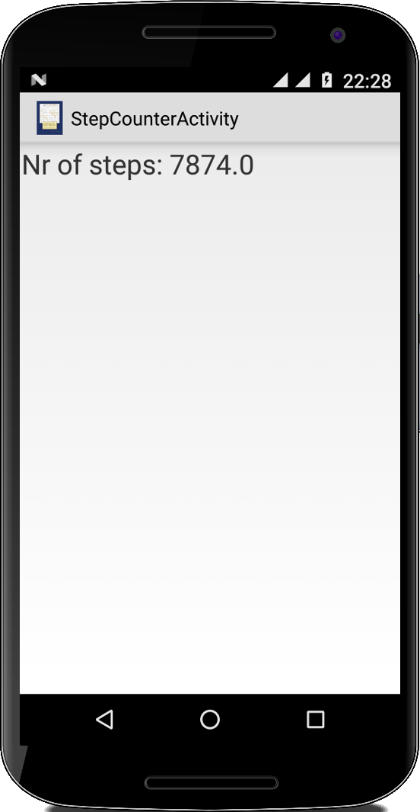

Sensors
Die meisten Android-Geräte haben Sensoren, manche sogar ganz viele. Im Prinzip unterscheidet man zwischen drei verschiedene Arten von Sensoren: den Positions-Sensoren, den Umwelt-Sensoren und den Bewegungs-Sensoren. Von den Positions-Sensoren, meist GPS, erhält man seine Position in Längen- und Breitengraden, manchmal auch die Höhe über dem Meeresspiegel. Mit den Umweltsensoren kann man Helligkeit, Temperatur und je nach Gerät manchmal auch Luftdruck messen. Bewegungssensoren messen Linear- und Drehbeschleunigung, und der Magnetfeldsensor gehört auch zu den Bewegungssensoren. Technisch müsste man wohl sowohl das Mikrofon als auch die Kamera als Sensoren bezeichnen. Sogar die Batterie ist als Sensor zu gebrauchen: man kann mit ihr Temperatur messen.
.
Location
Beginnen wir mit einem der wichtigsten Sensoren dem GPS Sensor [3]. Praktisch jedes Handy hat einen. Man verwendet ihn meistens um festzustellen wo man sich befindet. Man kann ihn aber auch verwenden um seine Geschwindigkeit und in Abwesenheit eines Magnetfeldsensors auch seine Richtung zu bestimmen, grob wenigstens.
Hat man keinen GPS ist noch nicht alles verloren, Android hat nämlich noch zwei andere Möglichkeiten zu bestimmen wo es sich befindet. Zum Einen über das Mobilfunknetz: jedes Handy verbindet sich mit dem Mobilfunknetz über die Mobilfunkmasten. Da diese Masten aber eindeutige Identifikationsnummern haben, und außerdem bekannt ist wo sich welcher Mast befindet, kann man auf diese Art und Weise ganz grob die Position bestimmen. Es muss sich eben in der Nähe dieses Mastens befinden. Zum Anderen kann man auch über das Wifi-Netz feststellen wo jemand ist, wenn man weiß wo der Wifi-Accesspoint steht.
Die Genauigkeit der verschiedenen Methoden ist ganz unterschiedlich: GPS ist das genaueste, mit einer Auflösung von ca. 5 bis 10 Metern. Es kostet aber auch den meisten Strom. Die Ortsbestimmung über das Mobilfunknetz ist viel ungenauer, in Städten manchmal auf ca. 100 Meter genau, auf dem Land sind es eher Kilometer. Aber es kostet keine zusätzliche Energie. Wifi ist irgendwo dazwischen, allerdings funktioniert es eher selten.
Wie weiß man jetzt welche LocationProvider denn überhaupt zur Verfügung stehen? Man fragt einfach den LocationManager:
protected void onCreate(Bundle savedInstanceState) {
...
LocationManager locationManager = (LocationManager) getSystemService(LOCATION_SERVICE);
// list all providers
String msg = "Available Providers are:\n";
List<String> providers = locationManager.getAllProviders();
for (String providerName : providers) {
LocationProvider provider = locationManager.getProvider(providerName);
msg += "- " + provider.getName() + ", ";
msg += provider.getAccuracy() + ", ";
msg += provider.getPowerRequirement() + "\n";
}
tv.setText(msg);
// get best provider
Criteria criteria = new Criteria();
criteria.setAccuracy(Criteria.ACCURACY_FINE);
String bestProvider = locationManager.getBestProvider(criteria, true);
tv.append("\nBest Provider is: " + bestProvider);
}
Will man noch wissen welcher denn der beste Provider ist, dann verwendet man die Criteria Klasse, und sagt z.B. man möchte einen Provider mit der ACCURACY_FINE.
Nachdem wir wissen welchen unserer LocationProvider wir wollen, ist der nächste Schritt diesen zu verwenden. Eine Möglichkeit ist das LocationListener Interface zu implementieren und die onLocationChanged() Methode zu überschreiben:
public class LocationActivity extends Activity implements LocationListener { protected void onCreate(Bundle savedInstanceState) { ... locationManager.requestLocationUpdates(bestProvider, 1000, 1, this); } public void onLocationChanged(Location location) { String msg = "" + location.getLongitude() + ", " + location.getLatitude(); Toast.makeText(this, msg, Toast.LENGTH_LONG).show(); } public void onPause() { locationManager.removeUpdates(this); super.onPause(); } ... }
Damit der LocationListener aber weiß welchen der vielen Provider er denn verwenden soll, müssen wir ihm das mitteilen mit der requestLocationUpdates() Methode: hier sagen wir welchen Provider er verwenden soll (bestProvider), wie oft er die Position updaten soll (1000 ms) und was so die Distanzänderungen sind die uns interessieren (1 Meter). Man sollte immer bedenken, dass der GPS Sensor ziemlich viel Strom frißt, deswegen je seltener wir ihn verwenden, desto seltener müssen wir auch unser Handy wieder aufladen. Auch was wir nicht vergessen dürfen ist, den GPS Sensor wieder auszuschalten, wenn wir ihn nicht mehr brauchen. Das machen wir in der onPause() Methode oben.
Damit das Program auch funktioniert, muss natürlich GPS eingeschaltet sein und man muss den Nutzer auch um Erlaubnis fragen. Das machen wir wie üblich in der AndroidManifest Datei:
<uses-permission android:name="android.permission.ACCESS_COARSE_LOCATION" /> <uses-permission android:name="android.permission.ACCESS_FINE_LOCATION" />
.
List Sensors
Was gibt es denn noch für Sensoren, außer dem GPS Sensor? Am besten fragt man den SensorManager, der weiß nämlich Bescheid:
SensorManager mSensorManager = (SensorManager) getSystemService(SENSOR_SERVICE); List<Sensor> sensorList = mSensorManager.getSensorList(Sensor.TYPE_ALL); String msg = ""; for (Sensor sensor : sensorList) { String type = ""; if (Build.VERSION.SDK_INT >= 20) { type = sensor.getStringType(); } else { type = "" + sensor.getType(); } msg += sensor.getName() + "\n"; msg += " " + type + "\n"; msg += " " + sensor.getPower() + " mA\n"; if (Build.VERSION.SDK_INT >= 21) { msg += " " + sensor.isWakeUpSensor() + "\n"; } } TextView tv = (TextView) findViewById(R.id.textview); tv.setText(msg);
Interessant im Beispiel oben ist vielleicht wie wir mit Build.VERSION.SDK_INT feststellen, welche Version von Android unser Nutzer verwendet, und abhängig davon Methoden aufrufen, die es erst ab einer gewissen Version gibt.
.
Environmental
Betrachten wir die Umwelt-Sensoren etwas näher. Das grobe Gerüst ist bei allen Sensoranwendungen gleich:
public class SensorActivity extends Activity implements SensorEventListener { private SensorManager mSensorManager; @Override public final void onCreate(Bundle savedInstanceState) { ... mSensorManager = (SensorManager) getSystemService(Context.SENSOR_SERVICE); } @Override public final void onSensorChanged(SensorEvent event) { switch (event.sensor.getType()) { case Sensor.TYPE_LIGHT: float illuminance_in_lx = event.values[0]; ... break; } } @Override protected void onResume() { super.onResume(); Sensor mLight = mSensorManager.getDefaultSensor(Sensor.TYPE_LIGHT); if (mLight != null) { mSensorManager.registerListener(this, mLight, SensorManager.SENSOR_DELAY_NORMAL); } } @Override protected void onPause() { super.onPause(); mSensorManager.unregisterListener(this); } @Override public final void onAccuracyChanged(Sensor sensor, int accuracy) { } }
Wir erweitern den SensorEventListener und implementieren dessen Methoden onSensorChanged() und onAccuracyChanged(), wobei wir praktisch nur onSensorChanged() verwenden werden. Dann benötigen wir einen SensorManager über den wir unsere Sensoren bekommen. Was dann noch wichtig ist, dass wir in der onResume() unsere Sensoren registrieren und in der onPause() wieder deregistrieren.
Im Beispiel oben haben wir den Licht-Sensor verwendet, den fast jedes Android Gerät hat, außerdem findet man noch folgende Sensoren mit abnehmender Häufigkeit:
- TYPE_LIGHT: misst die Luminosität in Lux,
- TYPE_PROXIMITY: misst die Entfernung in cm,
- TYPE_TEMPERATURE: misst die Temperatur in Grad Celsius,
- TYPE_PRESSURE: misst den Luftdruck in mbar.
Den jeweilgen Wert des Sensors erhalten wir in der onSensorChanged() Methode über den SensorEvent Parameter.
Wie immer bei Sensoren, verbrauchen die meisten viel Strom. Wir können darauf Einfluß nehmen, wenn wir die Sensoren nicht so häufig verwenden. Einstellen können wir das über den letzten Parameter der registerListener() Methode:
- SENSOR_DELAY_NORMAL: entspricht 200.000 Mikrosekunden,
- SENSOR_DELAY_GAME: entspricht 20.000 Mikrosekunden,
- SENSOR_DELAY_UI: entspricht 60.000 Mikrosekunden,
- SENSOR_DELAY_FASTEST: entspricht 0 Mikrosekunden.
Man kann aber auch einfach einen Wert von Hand übergeben, natürlich in Mikrosekunden.
.
Motion
Kommen wir zu den Bewegungs-Sensoren. Es gibt da im Prinzip drei Arten:
- TYPE_ACCELEROMETER: misst Beschleunigung in m/s2,
- TYPE_GYROSCOPE: misst Rotationsbewegungen in rad/s,
- TYPE_MAGNETIC_FIELD: misst Magnetfelder in Mikrotesla.
Fast alle Android Geräte haben einen Beschleunigungssensor. In letzter Zeit ist der Gyroskopsensor auch fast in jedem Gerät zu finden, der Magnetfeldsensor ist allerdings eher selten. D.h. vor allem mit Herstellungskosten zu tun.
Die Verwendung ist komplett analog zu den Umwelt-Sensoren, der einzige Unterschied liegt darin, dass wir jetzt drei Werte erhalten:
public final void onSensorChanged(SensorEvent event) {
switch (event.sensor.getType()) {
case Sensor.TYPE_ACCELEROMETER:
float[] acceleration_in_m_per_s2 = event.values;
msg[0] = "ACCEL: " + df.format(acceleration_in_m_per_s2[0]) + ", "
+ df.format(acceleration_in_m_per_s2[1]) + ", "
+ df.format(acceleration_in_m_per_s2[2])
+ " m/s2\n";
break;
...
}
Je einer für die x, die y und die z-Richtung.

Richtungen relativ zum Gerät
Wer gerne wissen möchte wie diese Sensoren wirklich funktionieren, findet in dem GoogleTechTalk von David Sachs eine gelungene Zusammenfassung [1].
.
Filter
Bei den drei Bewegungssensoren, die wir gerade kennengelernt haben, handelt es sich um Hardwaresensoren, und was wir bekommen sind die ungefilterten Rohdaten. Das sieht man daran, dass die Werte, speziell beim Beschleunigungssensor, relativ wild hin- und herspringen. Für viele Anwendungen ist das eher störend, und man möchte die Daten filtern. Die am häufigsten verwendeten Filter sind der Tiefpass (low-pass) und der Hochpass (high-pass).
Der Tiefpass ist im Prinzip ein gleitender Durchschnitt. Beim Beschleunigungssensor bewirkt er, dass die schnellen Schwankungen verschwinden, und alles was übrig bleibt ist die konstante Beschleunigung der Schwerkraft. Der Name kommt daher, dass der Tiefpass niedere Frequenzen ungehindert durchlässt, während er für hohe Frequenzen, also sich schnell ändernte Werte, nahezu undurchlässig ist. Er lässt also tiefe Frequenzen passieren.
private float lowPass(float current, float average) {
return average * LOW_PASS_FACTOR + current * (1- LOW_PASS_FACTOR);
}
Der Hochpass ist das Gegenstück dazu, und ist für niedere Frequenzen undurchlässig, dafür kommen die hohen Frequenzen nahezu ungehindert durch. Beim Beschleunigungssensor bedeutet das, dass die Schwerkraftkomponente herausgefiltert wird und lediglich die schnellen Hin- und Herbewegungen übrig bleiben. Allerdings bleibt das Rauschen (noise) erhalten, was für die meisten Anwendungen ein Problem darstellt.
private float highPass(float current, float average) {
return current - average;
}
Die Grenzfrequenz wird durch die beiden Konstanten bestimmt:
private final float LOW_PASS_FACTOR = 0.8f; private final int TIME_RESOLUTION = 100;
Dabei hat der LOW_PASS_FACTOR einen Wert zwischen 0 und 1, während die TIME_RESOLUTION meist in Millisekunden gemessen wird. Im Code sieht das dann so aus:
private long lastTime;
private float[] avg_acceleration = new float[3];
public final void onSensorChanged(SensorEvent event) {
long currentTime = System.currentTimeMillis();
if (currentTime - lastTime > TIME_RESOLUTION) {
lastTime = currentTime;
switch (event.sensor.getType()) {
case Sensor.TYPE_ACCELEROMETER:
float[] acceleration_in_m_per_s2 = event.values;
// low-pass
for (int i = 0; i < 3; i++) {
avg_acceleration[i] = lowPass(acceleration_in_m_per_s2[i], avg_acceleration[i]);
}
// high-pass
float[] high_pass = new float[3];
for (int i = 0; i < 3; i++) {
high_pass[i] = highPass(acceleration_in_m_per_s2[i], avg_acceleration[i]);
}
msg[0] = "no filter: " + df.format(acceleration_in_m_per_s2[0]) + ", "
+ df.format(acceleration_in_m_per_s2[1]) + ", "
+ df.format(acceleration_in_m_per_s2[2]) + "\n";
msg[0] += "low-pass: " + df.format(avg_acceleration[0])
+ ", " + df.format(avg_acceleration[1]) + ", "
+ df.format(avg_acceleration[2]) + "\n";
msg[0] += "high-pass: " + df.format(high_pass[0])
+ ", " + df.format(high_pass[1]) + ", "
+ df.format(high_pass[2]) + "\n";
break;
...
}
}
.
Sensor Fusion
Wir haben vorhin von Hardwaresensoren gesprochen. Das deutet an, dass es auch Softwaresensoren gibt. Das Problem mit den Hardwaresensoren ist, dass sie einmal ganz schön rauschen, und zum andern auch nicht besonders genau sind. Der Klassiker ist Indoor-Navigation basierend auf dem Beschleunigungssensor. Es funktioniert einfach nicht (wobei die Gründe hier eher vom Zweifachintegral stammen und weniger von der Ungenauigkeit des Sensors [1]).
Die Idee hinter den Softwaresensoren ist nun, die Hardwaresensoren gegeneinander auszuspielen, also aus mehreren Hardwaresensoren einen Softwaresensor zu erzeugen. Glücklicherweise macht Android das für uns, sonst müssten wir uns noch mit Kalman Filtern beschäftigen [2]. Auf den meisten Android Geräten gibt es die folgenden Softwaresensoren:
- TYPE_GRAVITY
- TYPE_LINEAR_ACCELERATION
- TYPE_GAME_ROTATION_VECTOR
- TYPE_ROTATION_VECTOR
Die beiden ersten machen faktisch genau das Gleiche was wir gerade bei den Filtern gemacht haben: TYPE_GRAVITY enthält den Schwerkraftteil der Beschleunigung, sagt uns also wo unten ist, und TYPE_LINEAR_ACCELERATION ist das was übrig bleibt wenn man TYPE_GRAVITY von den Rohdaten (TYPE_ACCELERATION) abzieht.
Wenn man weiß wo die Gyroskopdaten herkommen, wundert man sich, dass man die für irgendetwas verwenden kann. Trotzdem gehört der Gyroskopsensor zu den besseren. Man kann ihn aber noch besser machen, wenn man ihn über "Sensor Fusion" mit dem Beschleunigungssensor kombiniert [1]. Was dann rauskommt ist der TYPE_GAME_ROTATION_VECTOR. Man kann ihn relativ gut verwenden um Rotationen zu messen und auch um die Ausrichtung des Handys im Raum zu erhalten.
Allerdings hat der TYPE_GAME_ROTATION_VECTOR einen leichten Drift, er bleibt also nicht stabil, sondern driftet immer ein bischen (das kommt von dem Gyrosensor). Hat man aber das Glück in seinem Handy auch noch einen Magnetfeldsensor zu haben, kann man diesen Drift (auch wieder über Sensor Fusion) korrigieren. Das ist dann der TYPE_ROTATION_VECTOR. Die mit Abstand saubersten Daten liefert TYPE_ROTATION_VECTOR. D.h. wann immer dieser Sensor zur Verfügung steht, empfiehlt es sich diesen zu verwenden.
Verwendet werden die Softwaresensoren genauso wie die Hardwaresensoren. Die Werte die beim TYPE_GAME_ROTATION_VECTOR zurückkommen sind normalisiert zwischen -1 und +1, wenn man sie mit 180 multipliziert, dann erhält man Grad.
public final void onSensorChanged(SensorEvent event) {
String msg = "";
switch (event.sensor.getType()) {
case Sensor.TYPE_GAME_ROTATION_VECTOR:
float[] angle = event.values;
msg = "x-axis: " + df.format(angle[0] * 180) + " degrees\n";
msg += "y-axis: " + df.format(angle[1] * 180) + " degrees\n";
msg += "z-axis: " + df.format(angle[2] * 180) + " degrees\n";
break;
...
}
.
StepCounter
Ein anderes schönes Beispiel für einen Software-Sensor ist der Step-Counter Sensor. Wie üblich registrieren wir den Sensor in der onResume() Methode mittels:
Sensor mSensor = mSensorManager.getDefaultSensor(Sensor.TYPE_STEP_COUNTER); mSensorManager.registerListener(this, mSensor, SensorManager.SENSOR_DELAY_NORMAL);
und die gelaufenen Schritte erhalten wir dann ab und zu in der onSensorChanged() Methode:
public final void onSensorChanged(SensorEvent event) {
float steps = event.values[0];
tv.setText("Nr of steps: " + steps);
}
Das Schrittezählen funktioniert aber nur so lange unsere Activity im Vordergrund ist. Sobald die Activity nicht mehr aktiv ist, werden auch keine Schritte mehr gezählt. Später werden wir sehen, wie wir das mit Services, die im Hintergrund laufen, lösen können.
.
Review
So weit haben wir uns ein bisschen mit Sensoren beschäftigt. Mit dem LocationManager haben wir unsere Position bestimmt. An alle anderen Sensordaten kommen wir über den SensorManager. Als Beispielanwendungen haben wir uns als erstes eine Liste aller vorhandenen Sensoren geben lassen, und danach auf den Lichtsensor und den Beschleunigungssensor zugegriffen. Wir haben ganz kurz über Filter gesprochen, und schließlich die Softwaresensoren angesprochen.
.
Projekte
Was kann man mit den Sensoren denn so alles machen? Zunächst können wir an einer kleinen Konkurrenz von Google Maps arbeiten. Auch das Ostereierfinden ist natürlich mit GPS viel einfacher als ohne (speziell wenn man ein großes Grundstück hat). Wie man mit der Batterie Temperatur messen kann ist auch mal interessant zu wissen. Neben Erdbebenmessungen, können wir mit den Sensoren auch Alter und Manneskraft bestimmen. Ein paar Spiele sind auch unterhaltsam, z.B. unser alter Freund BrickBreaker über Lagesensor gesteuert. Von Zufallszahlen haben wir schon seit zwei Jahren nichts mehr gehört, wird wieder mal Zeit. Und ein Kompass und ein "Metall"-Detektor bilden dann den Abschluß.
.
OpenStreetMap
Im ersten Kapitel haben wir ja bereits gesehen, wie man eine geografische Position in OpenStreetMap anzeigen kann, indem man einfach den Längen- und Breitengrad eines Ortes übergibt:
Uri uri = Uri.parse(
"http://www.openstreetmaps.org/?lat=49.452&lon=11.082&zoom=20");
Intent intent = new Intent(Intent.ACTION_VIEW, uri);
startActivity(intent);
Inzwischen wissen wir aber auch wie wir mit dem GPS Sensor die Position unseres Handys bestimmen können. Wenn wir die beiden also kombinieren, können wir ganz einfach unsere momentane Position in OpenStreetMap anzeigen. Zu unserem eigenen Google Maps fehlt jetzt nur noch Dijkstra...
.
.
.
.
.
.
Easter Egg Hunt
Die "Digital Natives" suchen ihre Ostereier natürlich nur noch mit Handy (Karel natürlich auch). Die App besteht aus zwei Modi: dem OsterhasenModus und dem SuchModus.
Der OsterhasenModus ist für den Osterhasen: während er die Eier versteckt, clickt er auf einen Knopf "Add location" jedes Mal wenn er ein Osterei versteckt hat. Dabei wird die momentane Position in einer Liste von Locations gespeichert:
private List<Location> locations = new ArrayList<Location>();
Ist der Osterhase fertig mit dem Verstecken, clickt auf "Start Easter Egg Hunt" und übergibt das Handy den Kids. Die App wechselt dann in den SuchModus, was eigentlich nur bedeutet, dass die Buttons unsichtbar gemacht werden:
btnAddLocation.setVisibility(View.INVISIBLE); btnDone.setVisibility(View.INVISIBLE);
Im SuchModus zeigen wir die Entfernung zu den verschiedenen Locations farblich an: blau ist weit weg und rot ist ganz nah:
hsv[0] = distanceInMeters * DISTANCE_FACTOR; ll.setBackgroundColor(Color.HSVToColor(hsv));
Am besten verwendet man dazu den Farbton (Hue) [4] des HSV-Farbraum Modells. Die Werte des Farbtons gehen von 0 bis 360:
Wir können also ganz einfach die Distanz mit einer Konstanten (z.B. 6) multiplizieren, um eine Farbe zu erhalten. Das Array hsv ist eine Instanzvariable und wird mit den folgenden Werten initialisiert:
private float[] hsv = { 240f, 1f, 1f };
Was wir noch wissen müssen ist, wie wir die Distanz zwischen zwei Locations erhalten. Das geht am einfachsten mit der Methode distanceTo():
currentEasterEgg = 0;
float distanceInMeters = currentLocation.distanceTo(locations.get(currentEasterEgg));
Die Instanzvariable currentEasterEgg ist ein Zähler, den wir immer um eins erhöhen, wenn ein Osterei gefunden wurde. Wie wissen wir, dass ein Osterei gefunden wurde? Eine Möglichkeit wäre einfach zu sagen wenn die Distanz weniger als fünf Meter ist, dann ist das Osterei gefunden. Das ist zwar nicht ganz realistisch, aber da die Auflösung des GPS Sensors nicht viel besser als ein paar Meter ist, macht alles andere eigentlich keinen Sinn. Happy Easter!
.
Battery
Die Sensoren für Licht und Proximity haben wir ja schon gesehen. Interessant wäre natürlich noch ein Temperatursensor. Leider haben die wenigsten Geräte einen. Aber wir wären keine angehenden Ingenieure wenn wir so einfach aufgeben würden. Es stellt sich nämlich heraus, dass fast alle Android Geräte eine Batterie haben. Und nahezu alle modernen Batterien haben einen Temperatursensor zwecks Überladeschutz. Wäre doch cool wenn wir die Batterie nach ihrer Temperatur fragen könnten.
Den Zugriff auf die Batteriedaten erhält man über einen Intent:
IntentFilter batteryIntentFilter =
new IntentFilter(Intent.ACTION_BATTERY_CHANGED);
Intent batteryIntent = registerReceiver(null, batteryIntentFilter);
Dem stellt man einfach Fragen, z.B. nach der Temperatur:
int temperature = batteryIntent.getIntExtra(BatteryManager.EXTRA_TEMPERATURE, 0); float celsius = ((float) temperature) / 10;
oder der Batteriespannung:
int voltage = batteryIntent.getIntExtra(BatteryManager.EXTRA_VOLTAGE, 0);
Will man alles über die Batterie wissen, dann kann man durch die ganzen Extras iterieren:
Bundle extras = batteryIntent.getExtras();
for (String key : extras.keySet()) {
sb.append(key.toUpperCase() + ": ");
sb.append(extras.get(key) + "\n");
}
Eine kleine Anmerkung, die Temperatur der Batterie ist natürlich immer etwas höher als die Umgebungstemperatur. Denn sowohl beim Entladen (also sobald unser Handy an ist), aber besonders auch beim Aufladen, finden ja chemische Prozesse innerhalb der Batterie statt, die für eine erhöhte Temperatur sorgen.
Eine andere Möglichkeit an Batteriedaten zu kommen ist über den BatteryManager. Leider ist der ziemlich nutzlos, denn außer den momentanen Ladezustand, liefert der praktisch keine nützliche Information und er funktioniert erst ab Android Version 21 so richtig:
private String getBatteryLevel() {
String msg;
BatteryManager bm = (BatteryManager) getSystemService(BATTERY_SERVICE);
if (Build.VERSION.SDK_INT >= 21) {
int capacity = bm.getIntProperty(BatteryManager.BATTERY_PROPERTY_CAPACITY);
msg = "Battery Level: " + capacity + "%\n";
} else {
msg = "Battery Level not supported!\n";
}
return msg;
}
.
Earth Quake
Man kann mit Smartphones auch Erdbeben detektieren [5]. Dazu benutzt man einfach den Beschleunigungssensor und sucht nach bestimmten Mustern. Uns genügt aber ein ganz einfacher Erdbebendetektor: sobald die Werte des Beschleunigungssensor einen bestimmten Schwellwert überschreiten, geben wir Alarm mittels eines Toasts.
Als erstes definieren wir den Schwellwert für Erdbeben:
private final double EARTHQUAKE_THRESHOLD = 0.1;
Außerdem benötigen wir noch eine Instanzvariable für die letzten Werte des Beschleunigungssensors:
private double[] accelLast = new double[3];
Jetzt müssen wir lediglich in der onSensorChanged() Methode feststellen, um wieviel sich die Beschleunigung im Vergleich zum letzten Mal geändert hat:
double maxDelta = 0;
for (int i = 0; i < 3; i++) {
double accel = event.values[i];
double delta = accelLast[i] - accel;
accelLast[i] = accel;
if (delta > maxDelta) {
maxDelta = delta;
}
}
Wenn diese zu groß ist geben wir Alarm mittels eines Toasts:
if (maxDelta > EARTHQUAKE_THRESHOLD) {
Toast.makeText(this, "Earthquake detected!", Toast.LENGTH_SHORT).show();
}
Funktioniert aber nur wenn wir unser Smartphone auf festen Untergrund stellen, sonst gibt unsere App die ganze Zeit Alarm.
.
Age
Wir wollen eine kleine App schreiben mit der man das Alter einer Person bestimmen kann. Oben in unserer Erdbeben App haben wir effektiv einen Hochpass verwendet, also nur hohe Frequenzen durchgelassen, da uns nur schnelle Änderungen interessiert haben. Für unsere Altersbestimmungs App interessiert uns aber eher das durchschnittliche Zittern, wir wollen also auf die Deltas einen Tiefpass anwenden.
Wir holen uns also wie oben die Beschleunigungswerte, aber uns interessiert nur deren absoluter Wert (sonst kommt beim Durchschnittbilden null raus):
for (int i = 0; i < 3; i++) {
double accel = event.values[i];
double delta = Math.abs(accelLast[i] - accel);
accelLast[i] = accel;
// low pass filter
deltaAvg[i] = (ATTENUATION * deltaAvg[i] + delta) / (ATTENUATION + 1);
checkForAge();
}
Danach schicken wir die deltas durch den Tiefpass-Filter. Ein guter Wert für ATTENUATION ist 10.
Wie machen wir jetzt aus dem Zittern das Alter? Wir multiplizieren einfach mit 100. Nicht sehr wissenschaftlich, aber ist ja nur ne App. Damit die Daten auf dem Display nicht wild hin- und herspringen, macht es evtl noch Sinn die Anzeige nur einmal die Sekunde upzudaten:
private void checkForAge() {
long thisTime = System.currentTimeMillis();
if (thisTime - lastTime > DELAY) {
double maxDeltaAvg = Math.max(deltaAvg[2], Math.max(deltaAvg[1], deltaAvg[0]));
int age = (int) (maxDeltaAvg * 100);
tv.setText("You are about: " + age + " years old!");
lastTime = thisTime;
}
}
Ich bin laut meiner App 42, so fühl ich mich auch...
.
Hau den Lukas
Nach einer wissenschaftlichen Analyse zum Balzgehabe baiuwarischen Ureinwohner [6], kommt man recht schnell auf die Idee für eine App, die sich in Bayern bestimmt gut verkaufen ließe, und mit der man nebenher auch noch den Handyverkauf ankurbeln könnte.
Im Gegensatz zur Erdbeben App, wo wir uns nur für die kleinsten Beschleunigungen interessiert haben, interessieren uns bei der Hau-den-Lukas App nur die größten Beschleunigungen. Dazu berechnen wir den Betrag der momentanen Beschleunigung:
double accel = Math.sqrt(event.values[0] * event.values[0]
+ event.values[1] * event.values[1]
+ event.values[2] * event.values[2]);
Abhängig von der Höhe der Beschleunigung geben wir dann dem Ureinwohner Feedback. Dazu definieren wir zwei Arrays als Instanzvariablen (Eine TreeMap mit umgekehrter Sortierfolge wäre natürlich die bessere Datenstruktur):
private final int[] accelRequired = { 250, 200, 150, 100, 50, 0 };
private final String[] ranks = { "Weltmeister", "Weibaheld", "Haderlump",
"Anfänger", "G'schaftl Huaba", "Schlappschwanz" };
und vergleichen die momentane Beschleunigung accel mit den im accelRequired[] Array vordefinierten Werten:
int i = 0;
for (; i < ranks.length; i++) {
if (accel > accelRequired[i])
break;
}
tv.append(ranks[i]);
Damit ermitteln wir dann den Titel für unseren Ureinwohner.
Ganz fertig sind wir noch nicht: das Problem ist, dass die Methode onSensorChanged() mehrere Male in der Sekunde aufgerufen wird. Deshalb wird unser Rang nur ganz kurz angezeigt, bevor er wieder überschrieben wird. Wir benötigen also noch eine Instanzvariable oldAccel, und nur wenn die neue Beschleunigung höher war als die alte, zeigen wir diese an.
.
Billiards
Wir können Sensordaten natürlich auch für Spiele verwenden. Als Starter nehmen wir unser Billiard Programm aus dem ersten Semester. Die Idee ist, dass wir die Daten vom Beschleunigungssensor nehmen und damit den Ball bewegen.
Da wir in den GraphicsProgrammen die onCreate() ausgelagert haben, ist es am besten den SensorManager in unserer init() Methode zu initialisieren:
private SensorManager mSensorManager;
public void init() {
mSensorManager = (SensorManager) getSystemService(Context.SENSOR_SERVICE);
}
Die Methoden onResume(), onPause() und onAccuracyChanged() sind genauso wie in den vorhergehenden Beispielen.
Und wie bewegt sich jetzt der Ball? Das ist überraschend einfach, wir müssen lediglich vx und vy in der onSensorChanged() Methode anpassen:
public final void onSensorChanged(SensorEvent event) {
switch (event.sensor.getType()) {
case Sensor.TYPE_ACCELEROMETER:
float[] acceleration_in_m_per_s2 = event.values;
vx -= acceleration_in_m_per_s2[0];
vy += acceleration_in_m_per_s2[1];
break;
default:
return;
}
}
.
BrickBreaker
Auch beim BrickBreaker lässt sich der Beschleunigungssensor verwenden, in diesem Fall als sogenannter Lagesensor. Basierend auf dem Beschleunigungssensor wollen wir, dass sich der Paddle bewegt.
Zunächst machen wir die gleichen Anpassungen wie beim Billiardsbeispiel was den SensorManager und die onResume(), onPause() und onAccuracyChanged() Methoden angeht.
Dann müssen wir uns überlegen wie wir das mit dem Paddle machen. Eine Möglichkeit ist es dem Paddle eine eigene Geschwindigkeit zu geben, und basierend auf dieser Geschwindigkeit das Paddle zu bewegen:
private double paddleSpeed = 0;
private void movePaddle() {
if (paddle != null) {
double xP = paddle.getX();
if (xP < 0.0) {
paddleSpeed = 0;
paddle.setX(1);
} else if (xP > getWidth() - 2 * BALL_RADIUS) {
paddleSpeed = 0;
paddle.setX(getWidth() - 2 * BALL_RADIUS - 1);
}
paddle.move((int) paddleSpeed, 0);
}
}
Dann müssen wir lediglich noch paddleSpeed in der onSensorChanged() Methode anpassen:
public final void onSensorChanged(SensorEvent event) {
switch (event.sensor.getType()) {
case Sensor.TYPE_ACCELEROMETER:
float[] acceleration_in_m_per_s2 = event.values;
paddleSpeed -= acceleration_in_m_per_s2[0];
break;
default:
return;
}
}
Es dürfte ziemlich offensichtlich sein, dass wir hiermit eine ganze Klasse von Handyspielen abgedeckt bekommen.
.
BubbleLevel
Als letzte Anwendung für den Lagesensor schreiben wir eine Wasserwaagen App. Damit das Ganze hübsch aussieht implementieren wir es als GraphicsProgram. Unsere Bubbles sind einfach GOvals, eine für die horizontale und die andere für die vertikale Ausrichtung, die wir jeweils mittig platzieren:
private GOval bubbleHor;
private GOval bubbleVer;
private void setup() {
setBackground(Color.GREEN);
bubbleHor = new GOval(BUBBLE_SIZE, BUBBLE_SIZE);
bubbleHor.setFillColor(Color.WHITE);
bubbleHor.setFilled(true);
add(bubbleHor, (getWidth() - BUBBLE_SIZE) / 2, PADDING);
bubbleVer = new GOval(BUBBLE_SIZE, BUBBLE_SIZE);
bubbleVer.setFillColor(Color.WHITE);
bubbleVer.setFilled(true);
add(bubbleVer, PADDING, (getHeight() - BUBBLE_SIZE) / 2);
}
Die Positionierung der Luftblasen erfolgt in der onSensorChanged() Methode:
public final void onSensorChanged(SensorEvent event) {
switch (event.sensor.getType()) {
case Sensor.TYPE_ACCELEROMETER:
float[] acceleration_in_m_per_s2 = event.values;
if (bubbleHor != null) {
int x = (int) ((getWidth() - BUBBLE_SIZE) / 2 + acceleration_in_m_per_s2[0] * SENSITIVITY);
bubbleHor.setX(x);
int y = (int) ((getHeight() - BUBBLE_SIZE) / 2 - acceleration_in_m_per_s2[1] * SENSITIVITY);
bubbleVer.setY(y);
}
break;
default:
return;
}
}
Wenn man will kann man noch im Hintergrund je ein GRect für das Gehäuse der Wasserwaage setzen. (Warum man bei x ein Plus machen muss, und bei y ein Minus ist mir auch nicht ganz klar.)
.
AllAccelGyro
Wenn man sich Gedanken zu einer neuen App macht die Sensordaten verwenden soll, ist es hilfreich, wenn man die Sensordaten vorher mal visualisiert. Das wollen wir jetzt tun: eine App schreiben, welche die Werte des Beschleunigungssensors und des Gyroskops visualisiert.
Zu Beginn registrieren wir in der onResume() Methode Beschleunigungssensor und Gyroskop:
protected void onResume() {
super.onResume();
Sensor mAccelerometer = mSensorManager.getDefaultSensor(Sensor.TYPE_ACCELEROMETER);
if (mAccelerometer != null) {
mSensorManager.registerListener(this, mAccelerometer, SensorManager.SENSOR_DELAY_NORMAL);
}
Sensor mGyroscope = mSensorManager.getDefaultSensor(Sensor.TYPE_GYROSCOPE);
if (mGyroscope != null) {
mSensorManager.registerListener(this, mGyroscope, SensorManager.SENSOR_DELAY_NORMAL);
}
}
GraphView
Zum Visualisieren verwenden wir die Klasse GraphView. Es handelt sich dabei um einen ganz normalen View, der einen Context als Übergabeparameter im Konstruktor erwartet. Die Verwendung der Klasse ist so einfach wie möglich gehalten:
GraphView gv = new GraphView(this); gv.setStyle(GraphView.GraphStyle.LINE); gv.setColor(Color.BLUE); gv.setStrokeWidth(1); gv.setMin(-0.1f); gv.setMax(0.1f); gv.addDataPoint(accelLastAvg[i]); gv.postInvalidate();
Was die verschiedenen Stile angeht, kennt er HISTOGRAM, POINT und LINE. Die Daten werden wie bei einem Oszilloskop angezeigt, d.h. neue Datenpunkte werden von rechts kommend eingefügt.
TableLayout
Für diese App eignet sich das TableLayout am besten. Ähnlich wie Tabellen in HTML bestehen die Tabellen im TableLayout aus Reihen, TableRow, in die man dann ein oder meherere Views einfügen kann. Das TableLayout selbst ist ganz einfach zu definieren:
TableLayout.LayoutParams tableParams =
new TableLayout.LayoutParams(
TableLayout.LayoutParams.MATCH_PARENT,
TableLayout.LayoutParams.MATCH_PARENT);
TableLayout tl = new TableLayout(this);
tl.setBackgroundColor(0x200000ff);
tl.setLayoutParams(tableParams);
setContentView(tl);
Interessanter sind die LayoutParams der TableRow, denn hier können wir die gewünschte Breite und Höhe angeben, die ausnahmsweise sogar respektiert wird:
TableRow.LayoutParams rowParams =
new TableRow.LayoutParams(
TableRow.LayoutParams.MATCH_PARENT,
TableRow.LayoutParams.WRAP_CONTENT);
rowParams.width = width / NR_OF_COLUMNS;
rowParams.height = height / NR_OF_ROWS;
dabei sind width und height Instanzvariablen, die wir über die Methode getScreenSize() ermittelt haben (Kapitel zwei).
Jetzt können wir die zwei TableRows definieren, in die wir je drei GraphViews einfügen:
gvs = new GraphView[6];
TableRow tr1 = new TableRow(this);
for (int i = 0; i < 3; i++) {
gvs[i] = new GraphView(this);
gvs[i].setLayoutParams(rowParams);
tr1.addView(gvs[i]);
}
tl.addView(tr1);
TableRow tr2 = new TableRow(this);
for (int i = 3; i < 6; i++) {
gvs[i] = new GraphView(this);
gvs[i].setLayoutParams(rowParams);
tr2.addView(gvs[i]);
}
tl.addView(tr2);
Sensor Data
Im einfachsten Fall zeigen wir einfach die Rohdaten an:
public void onSensorChanged(SensorEvent event) {
switch (event.sensor.getType()) {
case Sensor.TYPE_ACCELEROMETER:
for (int i = 0; i < 3; i++) {
double accel = event.values[i];
gvs[i].addDataPoint(accel);
gvs[i].postInvalidate();
}
break;
case Sensor.TYPE_GYROSCOPE:
for (int i = 0; i < 3; i++) {
double gyro = event.values[i];
gvs[i + 3].addDataPoint(gyro);
gvs[i + 3].postInvalidate();
}
break;
default:
return;
}
}
Wenn wir aber auf den dritten Beschleunigungssensor achten, stellen wir fest, dass der einen Wert von 9.8 hat, und deswegen gar nicht angezeigt wird. Hier gibt es zwei Möglichketen: entweder Minimum und Maximum im GraphView für diesen Sensor zu ändern, oder einen Hochpass als Filter einzusetzen.
.
RandomGenerator
Am Anfang des zweiten Buchs haben wir ein bischen was über Pseudo-Zufallszahlen gelernt und dabei auch den Lehmer Algorithmus kennen gelernt. Alle Pseudo-Zufallszahlen Algorithmen haben das gleiche Problem: kann man die Seed erraten, also den ersten Wert, dann kann man alle folgenden Zahlen berechnen. Da in der Regel die Uhrzeit als Seed verwendet wird, gelingt es der NSA und ähnlichen Organisationen sehr häufig die meisten Verschlüsselungen zu knacken.
Da wir aber inzwischen auf die Sensordaten unseres Smartphones zugreifen können, können wir der NSA ein Schnippchen schlagen: wir benutzen einfach den Beschleunigungssensor und das Gyroskop um die Seed zu generieren. Vorab sollten wir aber noch zwei Dinge beachten: Natürlich sollte unser Smartphone nicht starr rumliegt, sondern ein bischen bewegen sollte es sich schon. Und was den z-Beschleunigungssensor angeht, wird der immer mit einer '9' beginnen (es sei denn wir sind auf dem Mond oder Mars).
Für unsere Anwendung definieren wir zwei Instanzvariablen:
private float[] acceleration_in_m_per_s2; private float[] rotation_in_rad_per_s;
Die werden in der onSensorChanged() Methode immer auf die aktuellen Werte gesetzt.
In der onClick() Methode des "Init Seed from Sensors" Buttons erzeugen wir dann eine seedA aus den Beschleunigungsdaten
float seedA = acceleration_in_m_per_s2[0]; seedA += acceleration_in_m_per_s2[1]; // gravity is to predictable: float gravity = acceleration_in_m_per_s2[2]; // get rid of first 3 digits gravity = gravity * 100 - (int) (gravity * 100); seedA += gravity;
und eine seedB aus den Gyroskopdaten
float seedB = rotation_in_rad_per_s[0]; seedB += rotation_in_rad_per_s[1]; seedB += rotation_in_rad_per_s[2];
Von den beiden Seeds nehmen wir dann noch den absoluten Wert
seedA = Math.abs(seedA); seedB = Math.abs(seedB);
Wir sollten darauf achten, dass beide Seeds größer als Null sind, denn ansonsten deutet das auf ein Problem mit den Sensordaten hin:
if (seedA > 0 && seedB > 0) {
// get exponent:
int expA = (int) Math.log10(seedA);
int expB = (int) Math.log10(seedB);
seedA = (float) (seedA * Math.pow(10, -expA));
seedB = (float) (seedB * Math.pow(10, -expB));
Log.i("seedA: ", "" + seedA);
Log.i("seedB: ", "" + seedB);
// now make them big
long seed = (long) (seedB * 100000 * 100000) + (long) (seedA * 100000);
rgen.setSeed((int) seed);
tv.setText("" + seed);
} else {
Toast.makeText(v.getContext(), "Bad seeds, try again!", Toast.LENGTH_SHORT).show();
}
Der Trick mit dem Logarithmus führt dazu, dass führende Nullen verschwinden. Die enthalten keinerlei Information und sind eher schädlich. Dann kombinieren wir die beiden Seeds und benutzen sie als Eingangsseed für unseren Lehmeralgorithmus.
Man könnte jetzt der Versuchung erliegen alle Zufallszahlen mittels Sensordaten erzeugen zu lassen und auf den Lehmer Algorithmus komplett zu verzichten. Davon würde aber jeder abraten, der ein Studium der Mathematik hinter sich hat.
.
Compass
Überraschend wenige Smartphones haben einen Magnetfeldsensor, speziell im unteren Preissegment. Sollte unser Smartphone aber einen haben, dann können wir diesen natürlich verwenden um einen Kompass zu programmieren.
Um uns nicht allzuviel Arbeit mit der UI zu machen, setzen wir auf Reuse: für die analoge Gradanzeige verwenden wir unser Projekt AnalogClock aus dem ersten Semester, wo wir einfach die Uhrzeiten durch Gradangaben ersetzen:
private void drawFace() {
face = new GOval(SIZE, SIZE);
add(face, 0, OFFSET);
}
private void drawAngles() {
for (int i = -5; i <= 6; i++) {
GLabel digit = new GLabel("" + i * 30);
digit.setFont("Times New Roman-bold-" + FONT_SIZE);
double radians = 2 * Math.PI * i / 12;
double radius = SIZE - 80;
double x = -30 + SIZE / 2 + Math.sin(radians) * radius / 2;
double y = 10 + SIZE / 2 - Math.cos(radians) * radius / 2;
add(digit, x, y + OFFSET);
}
}
Und für unsere Kompassnadel verwenden wir unser geliebtes GSpaceShip, wir machen es nur ein bisschen größer:
private void drawSpaceShip(float degrees) {
if (face != null) {
if (ship != null) {
remove(ship);
}
ship = new GSpaceShip();
ship.rotate(-degrees);
add(ship, SIZE / 2, SIZE / 2 + OFFSET);
}
}
Kommen wir zum Sensor: wir könnten zwar den Hardwaresensor TYPE_MAGNETIC_FIELD verwenden, allerdings viel einfacher ist der TYPE_ROTATION_VECTOR Sensor. Das ist ein Softwaresensor, der eine Kombination aus drei Hardwaresensoren ist und den Vorteil hat, dass zum einen die Schwerkraft verwendet wird um die z-Achse festzulegen, und zum anderen kleinere Schwankungen mittels Kalmanfilter bereinigt wurden.
Wir registrieren also den TYPE_ROTATION_VECTOR Sensor in der onResume() Methode:
protected void onResume() {
super.onResume();
Sensor mMagnet = mSensorManager.getDefaultSensor(Sensor.TYPE_ROTATION_VECTOR);
if (mMagnet != null) {
mSensorManager.registerListener(this, mMagnet, SensorManager.SENSOR_DELAY_NORMAL);
} else {
Toast.makeText(this, "Your device has no magnetic sensors!", Toast.LENGTH_SHORT).show();
}
}
und in der onSensorChanged() Methode zeichnen wir dann die Kompassnadel:
public void onSensorChanged(SensorEvent event) {
float degrees = event.values[2] * 180;
Log.i("degrees=", "" + degrees);
drawSpaceShip(degrees);
}
Ein Kompass mit Digitalanzeige wäre natürlich viel einfacher gewesen.
.
MetalDetector
Eine Anwendung bei der wir den Hardwaresensor TYPE_MAGNETIC_FIELD direkt verwenden können ist ein Metalldetektor, genauer ein Eisendetektor (oder was sonst noch so magnetische Felder verursacht, wie z.B. Gleichstrom). Wir registrieren unseren Magnetfeld-Sensor in der onResume() Methode:
protected void onResume() {
super.onResume();
Sensor mMagnet = mSensorManager.getDefaultSensor(Sensor.TYPE_MAGNETIC_FIELD);
if (mMagnet != null) {
mSensorManager.registerListener(this, mMagnet, SensorManager.SENSOR_DELAY_NORMAL);
} else {
Toast.makeText(this, "Your device has no magnetic sensors!", Toast.LENGTH_SHORT).show();
}
}
Bei der Auswertung der Sensordaten, müssen wir das Erdmagnetfeld beachten, dass ja immer vorhanden ist. Um es los zu werden, können wir einen Hochpass verwenden. Zusätzlich interessieren uns ganz schnelle Änderungen eigentlich auch nicht, deswegen verwenden wir zusätzlich auch noch einen Tiefpass. Natürlich müssen wir bei der Wahl unserer beiden Konstanten etwas vorsichtig sein, denn sonst kommen gar keine Daten mehr durch. Aber mit den folgenden beiden Werten
private final float LOW_PASS_FACTOR = 0.8f; private final int TIME_RESOLUTION = 100;
scheint es ganz gut zu funktionieren. Die onSensorChanged() Methode sieht dann wie folgt aus:
public final void onSensorChanged(SensorEvent event) {
long currentTime = System.currentTimeMillis();
if (currentTime - lastTime > TIME_RESOLUTION) {
lastTime = currentTime;
float[] field_strength_in_micro_tesla = event.values;
// low-pass
for (int i = 0; i < 3; i++) {
magneticBackground[i] = lowPass(field_strength_in_micro_tesla[i], magneticBackground[i]);
}
// high-pass filter
float[] highPass = new float[3];
for (int i = 0; i < 3; i++) {
highPass[i] = highPass(field_strength_in_micro_tesla[i], magneticBackground[i]);
}
msg = "x: " + df.format(highPass[0]) + "\n";
msg += "y: " + df.format(highPass[1]) + "\n";
msg += "z: " + df.format(highPass[2]) + "\n";
TextView tv = (TextView) findViewById(R.id.textview);
tv.setText(msg);
}
}
Wobei lastTime und magneticBackground zwei Instanzvariablen sind. Stellt sich die Frage, könnte man mit einem 50 Hz Filter auch Wechselstrom nachweisen?
.
Challenges
.
Spy
Eine interessante Beobachtung ist, dass man auf die Sensordaten ohne besondere Berechtigungen zugreifen darf. Anders ausgedrückt, wir als Nutzer unseres Phones, können einer Anwendung nicht verbieten auf die Sensoren zu zugreifen (ausgenommen natürlich der GPS Sensor). Man könnte nun meinen, dass sei ja nicht weiter schlimm, was kann man denn mit den Sensordaten schon anfangen? Nun, Forscher der Stanford University haben gezeigt [7], dass man das Gyroskop oder den Beschleunigungssensor effektiv als Mikrofon für Frequenzen von unterhalb 200 Hz verwenden kann. Verschwörungstheoretiker würden das als Beweis werten, dass Google von NSA Mitarbeitern unterwandert ist. Uns ist das aber egal, wir wollen das einfach mal in Aktion sehen.
Zunächst sollten wir den Beschleunigungssensor registrieren:
protected void onResume() {
super.onResume();
mSensorManager.registerListener(this,
mSensorManager.getDefaultSensor(Sensor.TYPE_ACCELEROMETER),
SensorManager.SENSOR_DELAY_FASTEST);
}
(auf manchen Geräten ist das Gyroskop besser geeignet). In der UI gibt es zwei Knöpfe, einen zum Aufnehmen und einen zum Abspielen:
btnAccel = (Button) findViewById(R.id.btnAccel);
btnAccel.setOnClickListener(new OnClickListener() {
@Override
public void onClick(View v) {
rawPointer = 0;
btnAccel.setEnabled(false);
}
});
btnAgain = (Button) findViewById(R.id.btnAgain);
btnAgain.setOnClickListener(new OnClickListener() {
@Override
public void onClick(View v) {
getMinMax();
short[] buffer = convertToAudio();
playAudio(buffer);
}
});
Die Aufnahme findet in der onSensorChanged() Methode statt:
private int rawPointer = TIME * FREQUENCY / SCALE; private float[] rawData = new float[TIME * FREQUENCY / SCALE]; public void onSensorChanged(SensorEvent event) { if (rawPointer < TIME * FREQUENCY / SCALE) { float[] values = event.values; float delta = 0; for (int i = 0; i < 3; i++) { delta += values[i] - oldValues[i]; oldValues[i] = values[i]; } // we do not want the first value: if (delta < 9) { rawData[rawPointer] = delta; rawPointer++; } } else { getMinMax(); mTextView1.setText("size: " + rawData.length + ", min=" + min + " ,max=" + max); btnAccel.setEnabled(true); } }
Die Sensordaten werden in dem Instanzarray rawData gespeichert. Der rawPointer ist ein Pointer in das rawData Array. Wenn wir am Ende des Arrays angelangt sind, dann hört die Aufnahme auf. Die Länge der Aufnahme wird durch die drei Konstanten
private final int SCALE = 80; // should be a gcd of FREQUENCY private final int FREQUENCY = 8000; private final int TIME = 2; // seconds
definiert. Dabei sollte FREQUENCY nicht verändert werden. TIME ist ungefähr die Länge der Aufnahme in Sekunden, und SCALE hat einen Wert irgendwo zwischen 10 und 100, abhängig davon wie schnell das Gerät die Sensordaten liefert.
Die Methode getMinMax() wird benötigt um die Sensordaten zu skalieren, es findet einfach den kleinsten und den größten Wert in dem Sensordatenarray:
private float min, max;
private void getMinMax() {
min = Float.MAX_VALUE;
max = Float.MIN_VALUE;
for (int i = 0; i < rawData.length; i++) {
float value = rawData[i];
if (value > max) {
max = value;
}
if (value < min) {
min = value;
}
}
}
Damit lassen sich die Sensordaten dann in Audiodaten konvertieren,
private short[] convertToAudio() {
short[] buffer = new short[TIME * FREQUENCY];
float maxMinusMin = max - min;
for (int i = 0; i < TIME * FREQUENCY; i++) {
// scale between 0 and 1:
float v = (rawData[i / SCALE] - min) / maxMinusMin;
// scale to max range of short:
short vv = (short) (2 * Short.MAX_VALUE * (v - 0.5));
buffer[i] = vv;
}
return buffer;
}
die wir dann ganz einfach abspielen können:
private void playAudio(short[] buffer) {
int audioLength = buffer.length;
AudioTrack audioTrack = new AudioTrack(AudioManager.STREAM_MUSIC, FREQUENCY,
AudioFormat.CHANNEL_CONFIGURATION_MONO, AudioFormat.ENCODING_PCM_16BIT, audioLength,
AudioTrack.MODE_STREAM);
audioTrack.play();
audioTrack.write(buffer, 0, audioLength);
}
Unsere App ist natürlich nicht perfekt, für Stimme oder Musik ist sie nicht geeignet. Wenn wir aber Morse-artig auf den Tisch klopfen (und das Gerät auf dem Tisch liegt), dann kann man das Klopfen hören. Wir haben also ein Mikrofon für niederfrequente Geräusche. Übrigens ist das auch der Grund warum man seine Festplatte nicht anschreien soll [8].
.
RotationVectorDemo (TYPE_GAME_ROTATION_VECTOR)
Wir haben den Softwaresensor TYPE_GAME_ROTATION_VECTOR noch nicht angesprochen. Im Gegensatz zum Sensor TYPE_ROTATION_VECTOR kommt er ohne Magnetfeldsensor aus, funktioniert also auf viel mehr Endgeräten. Einen kleinen Nachteil hat er aber schon, es gibt immer einen kleinen Drift, abhängig vom Gerät.
Ein wunderschönes Beispiel von Google, die RotationVectorDemo [9] zeigt sehr schön visuell wie man den Sensor benutzt und was mit dem Drift gemeint ist. Als kleines Zusatzfeature sieht man auch wie man mit OpenGL in Android arbeiten kann.
.
Research
In diesem Kapitel gibt es noch zwei interessante Themen, die man noch etwas vertiefen könnte.
.
Sensor Fusion
Wir haben den Begriff "Sensor Fusion" ein paar mal erwähnt. Dazu gibt es einen sehr interessanten GoogleTechTalk von David Sachs [1], den man sich mal anschauen sollte. Überhaupt gibt es ne ganze Menge cooler GoogleTechTalks.
.
Kalman Filter
"Sensor Fusion" verwendet unter anderem Kalman Filter. Als angehende Ingenieurin schadet es nichts mal den Artikel in der Wikipedia zu überfliegen [2].
.
Fragen
-
Auf den meisten Android Geräten gibt es mehrere Möglichkeiten um die eigene Position (location) zu bestimmen, manche mit höherer andere mit geringerer Auflösung. Nennen Sie drei verschiedene Möglichkeiten.
-
Benötigt man besondere Erlaubnisse (permissions) um auf die Positionsdaten (location) eines Gerätes zugreifen zu können, oder anders ausgedrückt, bedarf es besonderer Permissions wenn die Applikation auf dem Gerät installiert wird?
-
Warum ist der Dalvik Debug Monitor Server (DDMS) wichtig wenn man Apps entwickelt, die den GPS Sensor benötigen?
-
Welche Sensoren findet man auf den meisten normalen Android Geräten? (Nennen Sie mindestens 5)
-
Was versteht man unter dem Begriff Sensor Fusion, und warum ist es relevant für Android Entwickler?
-
Filter werden sehr häufig zusammen mit Sensoren verwendet, dabei kommen vor allem der Hochpass- und der Tiefpassfilter vor. Nennen Sie ein Beispiel wann Sie einen Hochpass- und wann Sie einen Tiefpassfilter einsetzen würden.
- Überlegen Sie sich eine Beispielapp die Sie mit dem Beschleunigungssensor entwickeln könnten.
.
Referenzen
[1] David Sachs, GoogleTechTalks, Sensor Fusion on Android Devices: A Revolution in Motion Processing, https://www.youtube.com/watch?v=C7JQ7Rpwn2k
[2] Kalman filter, https://en.wikipedia.org/wiki/Kalman_filter
[3] Global Positioning System, en.wikipedia.org/wiki/Global_Positioning_System
[4] Hue, https://en.wikipedia.org/wiki/Hue
[5] Qingkai Kong, et.al., Smartphone-based Networks for Earthquake Detection, https://pdfs.semanticscholar.org/554a/f252d80c8cefc5de0a8f511a3427f8b9bcb9.pdf
[6] Hau den Lukas auf der Wiesn, https://www.youtube.com/watch?v=_AOdyo3tCwc
[7] Michalevsky Y., Boneh D., and Nakibly G., Gyrophone: Recognizing Speech From Gyroscope Signals, https://crypto.stanford.edu/gyrophone/files/gyromic.pdf
[8] Bryan Cantrill, Shouting in the Datacenter, https://www.youtube.com/watch?v=tDacjrSCeq4
[9] RotationVectorDemo.java, https://android.googlesource.com/platform/development/+/master/samples/ApiDemos/src/com/example/android/apis/os/RotationVectorDemo.java
.